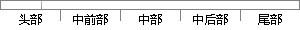

表2-2 ARM状态下的寄存器
片段位置图

相似结果
相似片段：ARM状态下的寄存器组织,包括通用寄存器及程序状态寄存器,如图 2-2。具体来说...(1)调用一系列的初始化函数 1)指定初始化函数表 init_fnc_t *init_sequence...
| 标题 | 《基于ARM和Linux的嵌入式Web服务器的研究与实现》 |
| 对比库 | 中国学位论文全文数据库 |
| 作者 | 王军飞 |
| 机构 | 太原理工大学 |
| 分类 | 计算机应用技术 |
| 年份 | 2009 |
| 相似率 | 75% （轻度抄袭） |